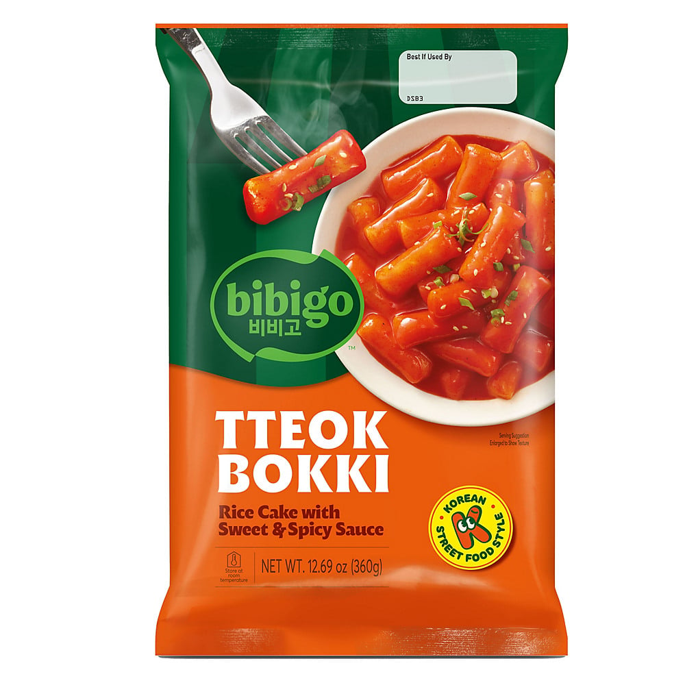
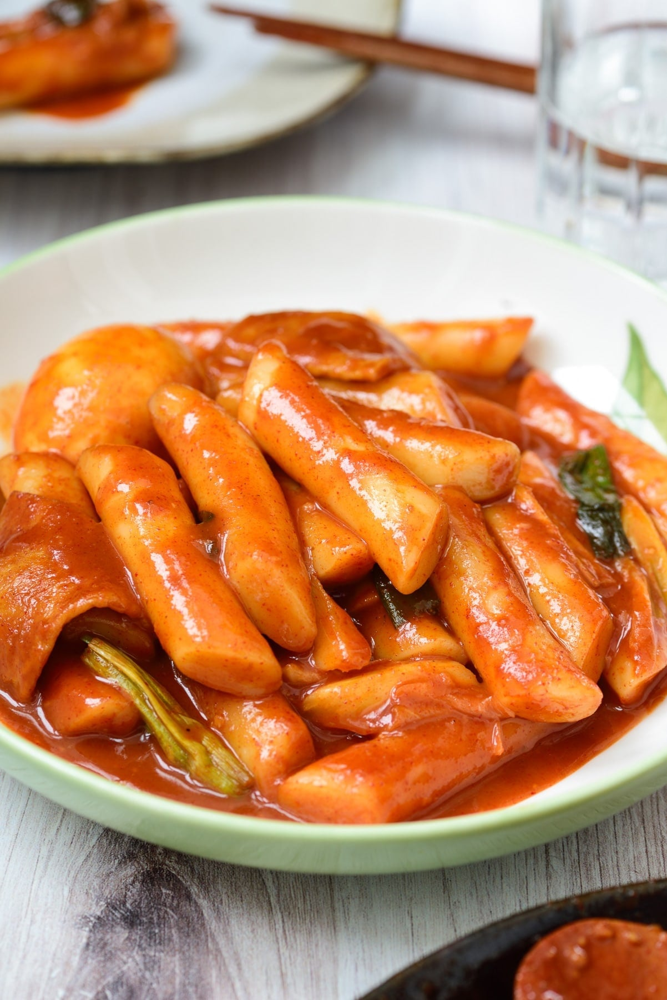
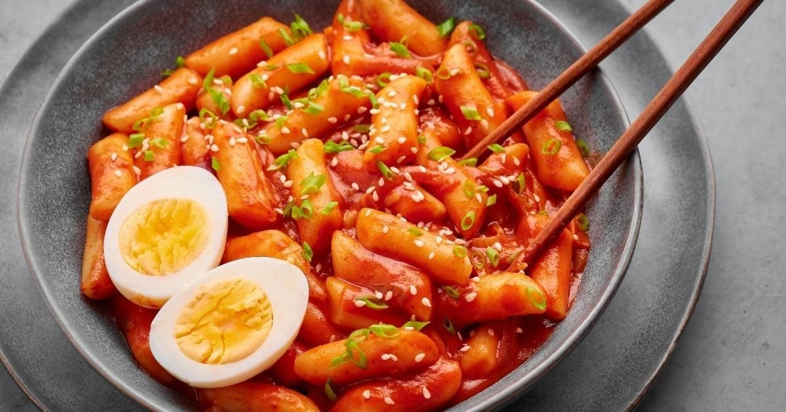

<div> <table style="border-collapse: collapse; width: 99.9809%;" border="1"><colgroup><col style="width: 49.9522%;"><col style="width: 49.9522%;"></colgroup> <tbody> <tr> <td> <div><span style="font-size: 14pt;"><strong>Roluri de orez in sos dulce si condimentat Bibigo Tteokbokki Sweet &amp; Spicy, 360g</strong></span></div> <div><span style="font-size: 14pt;">Bucură-te de porția ta preferată de tteokbokki &icirc;n format generos, perfect pentru &icirc;mpărțit! Pachetul de la Bibigo &icirc;ți aduce celebrele prăjituri din orez, moi și gumașe, alături de sosul original intens, dulce-picant. O masă caldă, extrem de reconfortantă și gata &icirc;n doar c&acirc;teva minute, direct la tine acasă.</span></div> </td> <td></td> </tr> <tr> <td></td> <td><span style="font-size: 14pt;">Descoperă o farfurie plină de culoare și savoare tradițională. Batoanele dense din orez sunt perfect &icirc;mbibate &icirc;ntr-un sos bogat și catifelat, iute-dulce, completat de prospețimea cepei verzi. Adaugă un ou fiert pentru a echilibra iuteala și vei obține gustarea stradală perfectă, simplu și rapid de pregătit.</span></td> </tr> <tr> <td><span style="font-size: 14pt;">Recreează atmosfera vibrantă din Seul cu o porție apetisantă de tteokbokki presărat cu susan și ceapă verde. Textura irezistibil de moale a orezului se &icirc;mbină ideal cu sosul picant, iar ouăle fierte adaugă consistență acestui preparat legendar. O alegere excelentă pentru pr&acirc;nz sau o cină rapidă plină de caracter.</span></td> <td></td> </tr> </tbody> </table> </div>